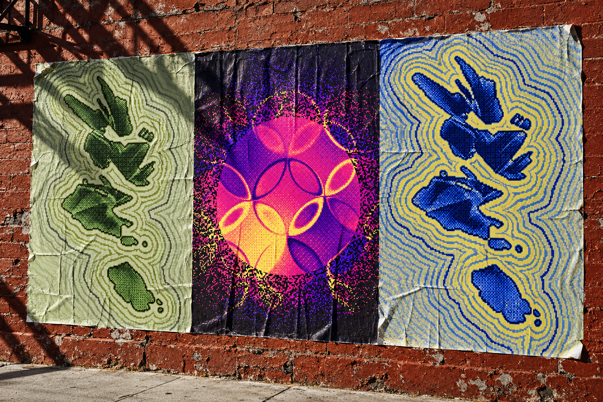
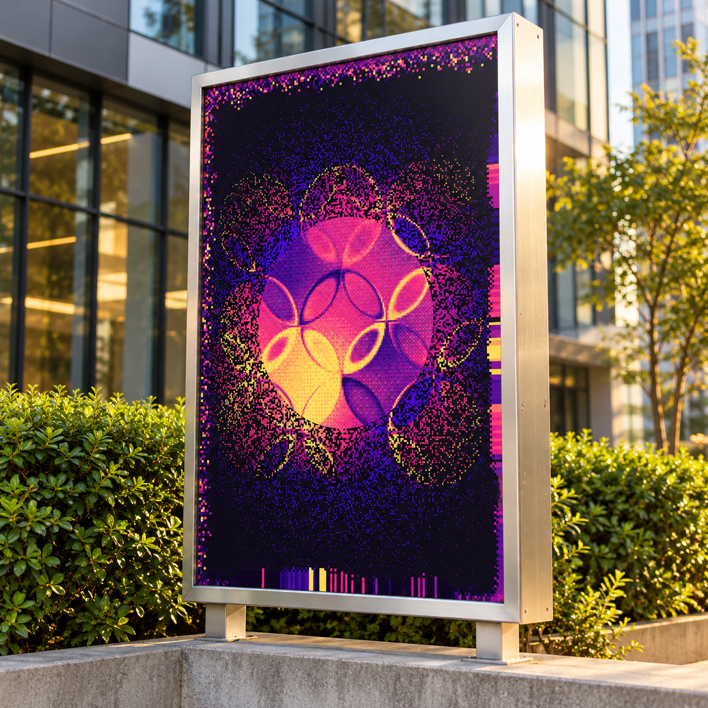
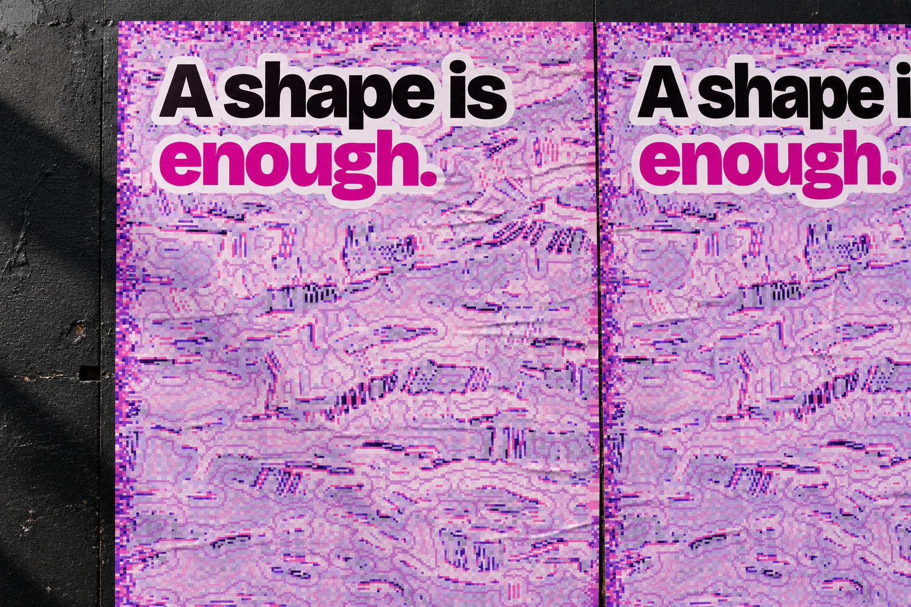
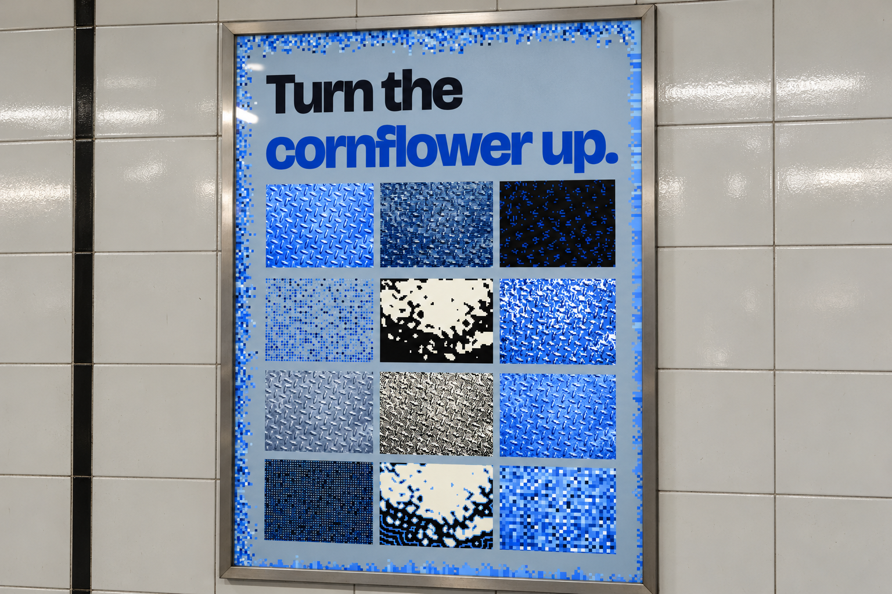
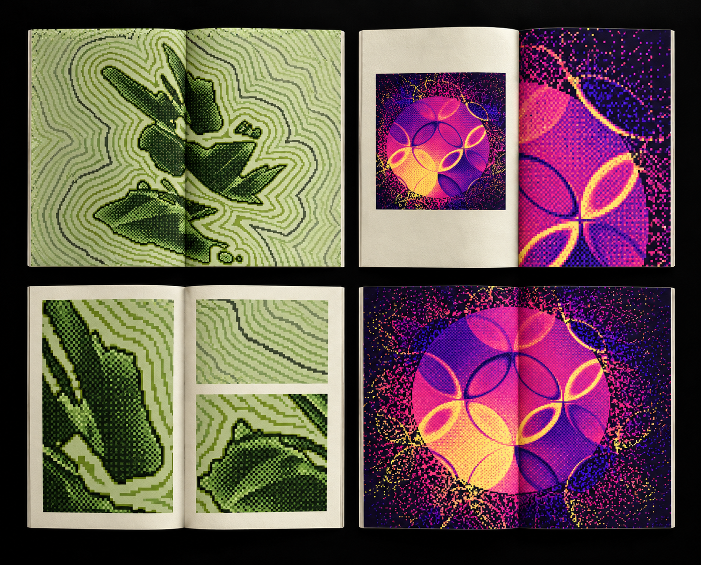
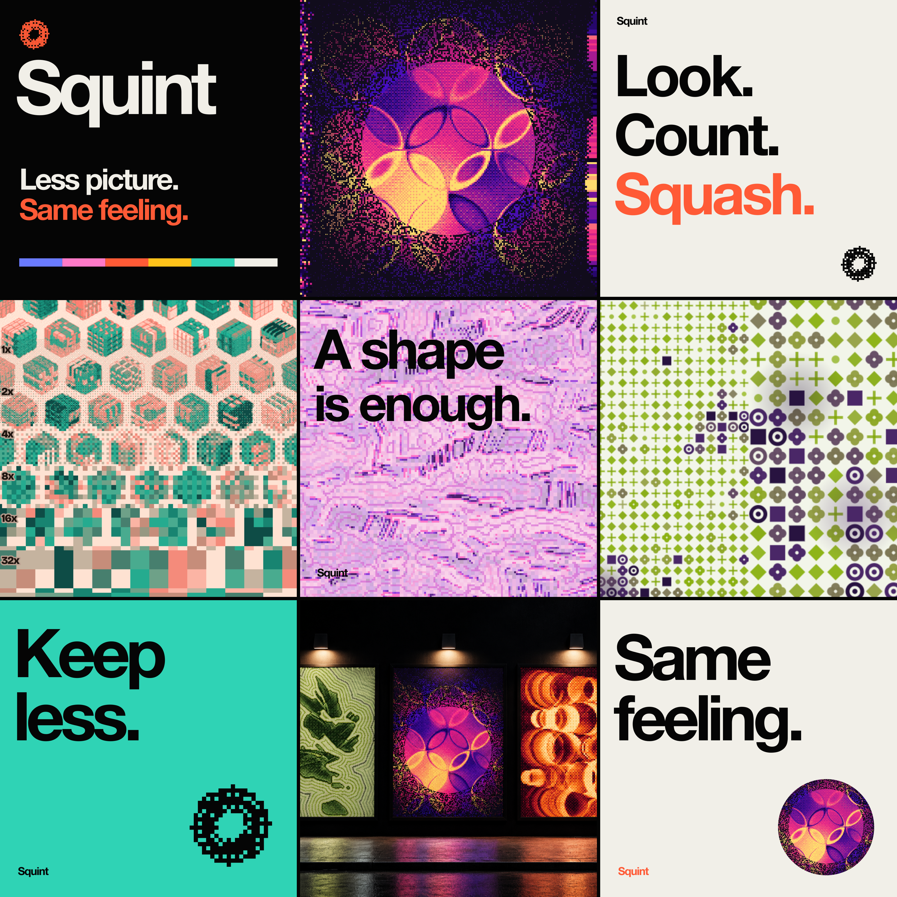
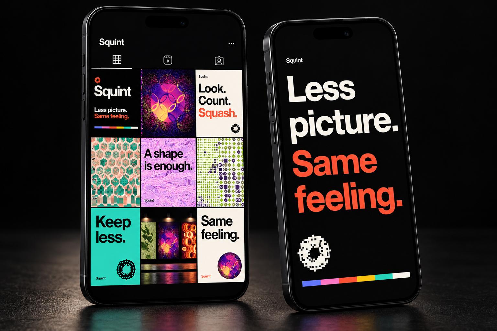

Squint
Less picture, same feeling. Squint takes any photograph, throws most of it away, and prints what is left as a poster.
Why
How simple can a picture get? Make the squares bigger and it gets simpler. Swap a thousand colours for ten and it gets simpler again.
What I did
Built a tool that finds the point just before a picture stops being itself, then a brand, sixteen posters and a zine that look like it.
What it taught me
At some point it stops being the picture, and just before that it is at its most interesting.
Self Initiated · 2026
[Canvas, Bricolage Grotesque, DM Mono]






